You are a T. rex with very short arms, and six floors of the prehistoric world want you gone.
Free to play right here. Click the game to start. It works with a mouse and keyboard or a touch screen.
Rex Rumble is a retro first-person action game in the spirit of Wolfenstein 3D and Doom, except that you are the dinosaur. Claw, bite and roar your way through forests, swamps, lava caves and a golden throne room, find the eggs, scare off everything that hunts you, and reach the green footprint that leads down to the next floor.
Then build floors of your own in the level editor that comes with it. The whole game is one file: download rex-rumble.html and it plays offline, too.
How to play
Every dino flashes red while it winds up an attack. Step out of its line, then punish it.
- Claw is fast and wide. It hits up to three dinos at once, and lands early enough to knock a dino off a strike it has already started.
- Bite is slow and roots you to the spot, but it does double damage to a dino already committed to its own move. Biting into the red flash beats swinging on reflex.
- Roar freezes every dino near you. You carry up to three; stars give you more.
- Golden eggs are points, and each floor hides most of them. Meat heals you. The green footprint is the way out, though on some floors it only appears once the boss is beaten.
Moving and looking
| Action | Key / input |
|---|---|
| Move and strafe | W A S D (or ↑ ↓ to walk) |
| Turn | Mouse, or Q / E (← / → also turn) |
| Look up and down | Mouse, PgUp / PgDn, I / K |
| Centre the view | Home |
Fighting
| Action | Key / input |
|---|---|
| Claw | Left click or F |
| Bite | Right click or Space |
| Roar | R or Shift |
| Pause and level editor | Esc or P |
| Music on and off | M |
Phone and tablet
| Action | Touch |
|---|---|
| Walk | Drag anywhere on the left half. A stick appears under your thumb. |
| Look around | Drag on the right half, up and down too |
| Claw, bite, roar | The buttons at the bottom right |
| Pause and level editor | The II button, top left |
| Best view | Turn sideways, and tap Full window above |
The dinosaurs
Every dino is drawn from the front, the side and behind, so you can tell at a glance which way it's facing, and whether it's about to come for you.
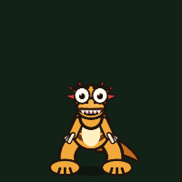
Velociraptor
Amber, tiger-striped pack hunters with a red crest. The first one to spot you screeches for the rest, and the pack fans out to come at you from different sides. Each one crouches, springs, slashes and immediately backs out of reach, so keep turning.
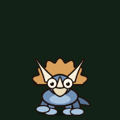
Triceratops
Armoured and stubborn. It paws the ground along the line it's about to charge, which gives you seven tenths of a second to get off that line.
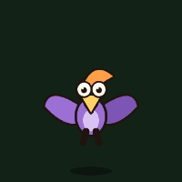
Pterosaur
Circles overhead, rears up with a screech, then dives at you in a straight line. Sidestep the dive.
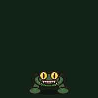
Borealosuchus
A crocodilian lurking in the bayou, with heavy jaws and armoured scales that are softest from behind. It coils before it snaps forward, so there is always a beat to step aside.
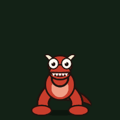
Carnotaurus
The horned guardian of the bayou's bone gate. It rears up with a bellow and keeps aiming for half a second before it commits to a charge. Break the line in that window and it thunders past.
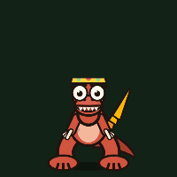
The Bone King
The colossal ruler of the Bone Throne, with a huge reach and a crown-guard of dinos.
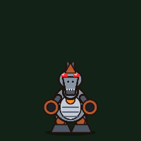
The Robo-Spinosaurus
A steel spinosaurus with a furnace for a heart and cannons for arms. When it breathes in, its belly and sail blaze: get behind a pillar before it sweeps the arena with fire. Too close, and both cannons come up with a whine and blast you across the room. Below half health it overheats and gets faster.
Six floors
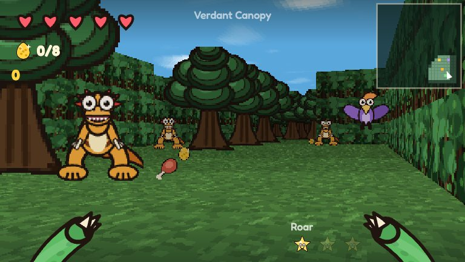
Verdant Canopy
Open primeval forest under a wide blue sky. The walls are trees, the doors are gaps in the thicket, and the eggs are tucked into nests.
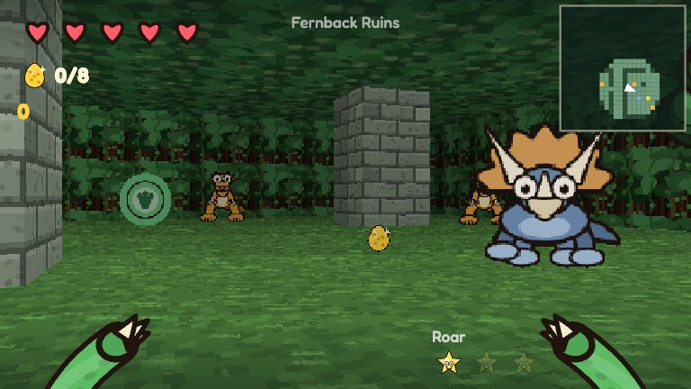
Fernback Ruins
Ancient stone pillars overgrown with pines and hanging vine curtains.
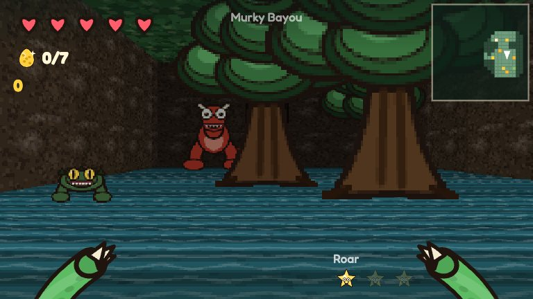
Murky Bayou
A cypress swamp with a bone gate, a fossil key, and the Carnotaurus standing guard. The way out only appears once it falls.
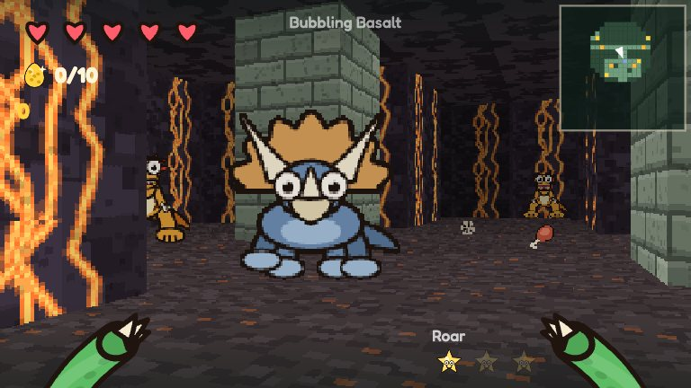
Bubbling Basalt
Volcanic caverns, ash floors, glowing lava walls, and a raptor pack that likes the heat.
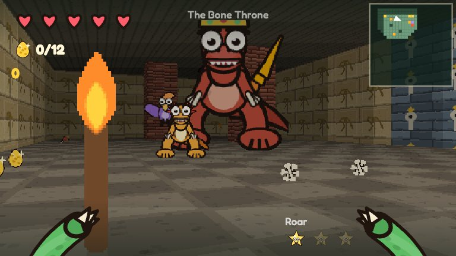
The Bone Throne
A golden temple arena, and the showdown with the Bone King.
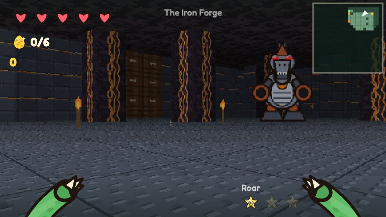
The Iron Forge
Riveted iron, steel floors and lava pillars to hide behind. The exit is sealed behind a key gate, and the Robo-Spinosaurus carries the key.
Music and sound
All of it is synthesized live in your browser: there are no music files. Every floor has its own soundtrack, and it builds while dinos are actually hunting you, speeding up a little once the hunt is properly on. A boss brings its own theme. And the places make their own sounds: lava roars and bubbles, iron hums and clanks, mud gurgles and hides frogs, trees rustle, gold rings faintly and water laps around you, each one louder the closer you get and coming from the side it's on.
| Track | Mood | Plays on |
|---|---|---|
| Jungle Drums | Congas, clave and a marimba under the canopy, a wooden flute, birds overhead | Verdant Canopy |
| Misty Ferns | Ambient: slow pads, a kalimba wandering in the echo, wind, crickets, something huge calling far off | Fernback Ruins |
| Bayou Haze | A slow swampy shuffle: upright bass, a dobro on the blues scale, bullfrogs and cicadas | Murky Bayou |
| Magma Chamber | A deep rumble, taiko drums, a distorted riff, bubbling lava and steam | Bubbling Basalt |
| Sunken Temple | Ancient magic: a droning tanpura, temple bells, a ritual drum, a choir and a snake-charmer reed | The Bone Throne |
| Iron Forge | Pistons, a hammer on the anvil, clockwork and a growling bass | The Iron Forge |
| Apex Predator | The boss fight: pounding drums, brass stabs and a horn theme | Any floor, once a boss notices you |
| Rex Riff | The original stomp: a bass riff, a drum kit and a square-wave tune | Pick it in the editor |
| Silence | No music, just the dinos | Pick it in the editor |
Build your own floors
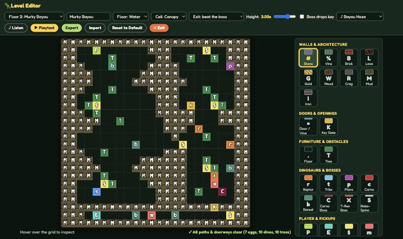
The level editor is built into the game. Open it from the title screen, or press Esc while playing and choose Edit this floor.
- Paint walls, doors, trees, dinos, bosses, eggs, keys and pickups onto the 24×24 grid, with a mouse or a finger.
- Set the mood: floor and ceiling textures, the ceiling height, and the floor's music. Press Listen to hear a track right there. The tiles bring their own sounds with them, so painting lava gives you lava to hear.
- Choose the exit's goal: the footprint can be there from the start, or appear only once you beat the boss, scare off every dino, or find every egg.
- It checks your work as you paint: a tree plugging a one-tile passage, an exit you can't reach, a walled-in boss, or a key locked behind its own gate.
- Playtest in one click. Export a floor to share it, and Import one someone sent you. Your changes are saved in your browser.